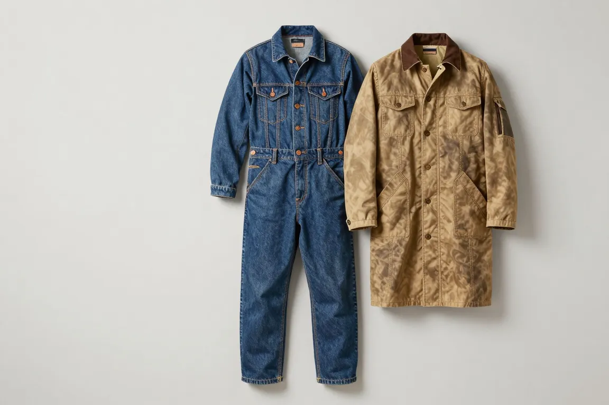

fashion · 1873–1955 · also: American work clothes, Frontier workwear, Denim and duck work dress
The hard-wearing dress of miners, railmen and farmers. An indigo denim overall or a duck canvas coat, with copper rivets at the stress points, built for price and long wear.

Core thesis
Work dress earns its form by use. Each seam, pocket and rivet answers a failure that the worker met, and the garment looks better when it is old.
Design principles
Rivet each stress point: the pocket corners and the base of the fly.
Weave the cloth heavy: 400 to 600 g per square metre in denim, 500 g or more in duck.
Double-stitch the felled seams so that no seam opens under load.
Set the pocket where the hand falls: two on the chest, two at the hip, one for the rule.
Cut the bib or jacket with room to bend and reach, and size it by use, not by fashion.
Dye the warp in indigo and leave the weft white, so that the cloth fades along the wear.
Use brass or copper hardware that does not rust.
Anti-patterns
A thin, soft cloth that tears at the knee
Decoration that does not serve use
A tight fit that limits the reach
Hardware of plated plastic
A clean, sprayed-on fade that has no wear behind it